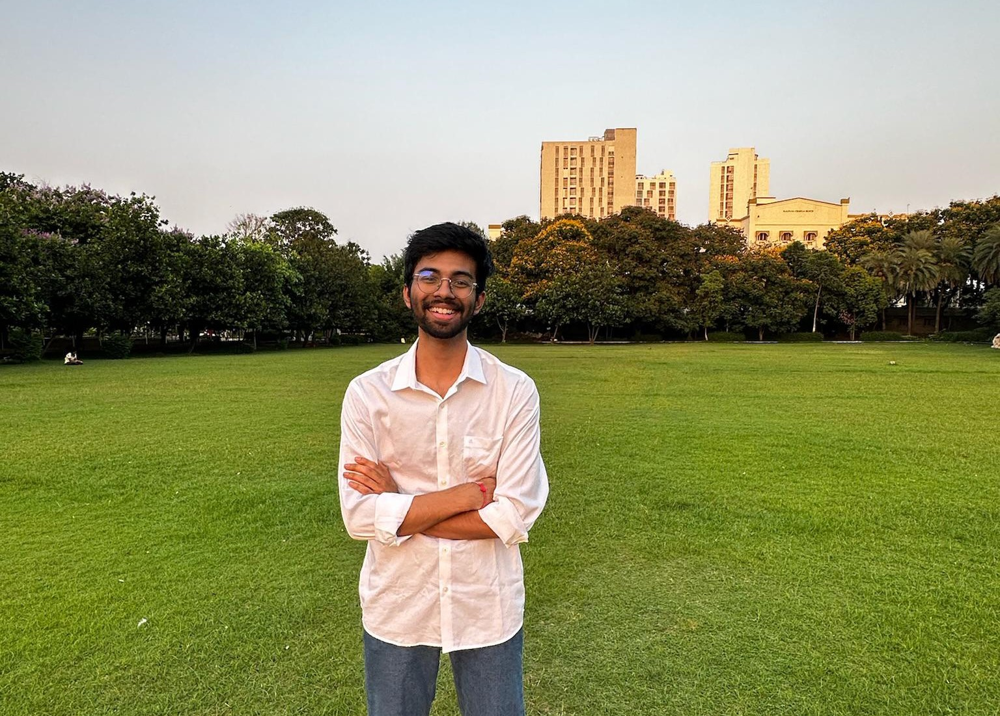
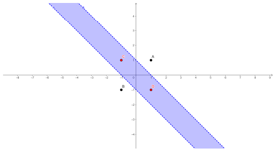
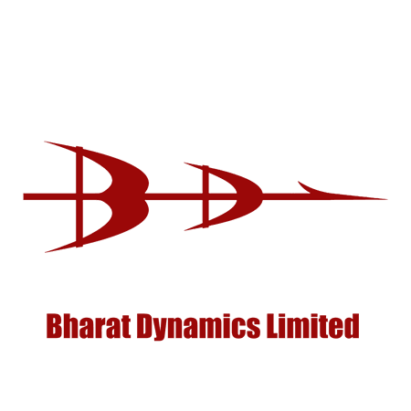
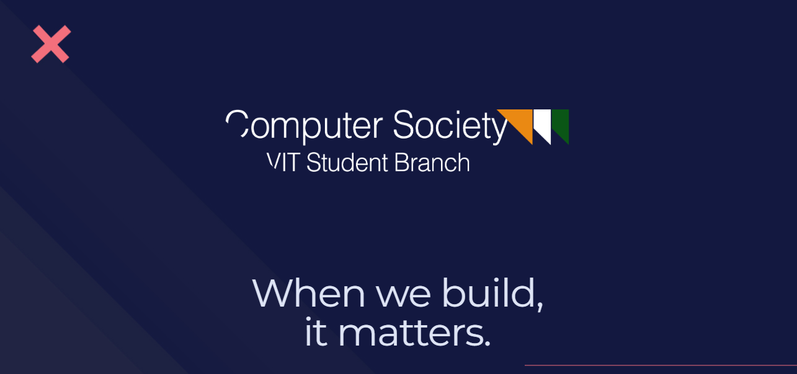

Yug D OswalI'm a SPAR Fellow and final year CS undergrad at VIT Vellore, India. I'm most recently working on:
My current research is around interpretability, safety, and catastrophic inheritance. I've previously worked (and continue) in theoretical/empirical ML and representation learning. I'm planning on pursuing a MS (PhD subject to planning). Currently (still) working towards the best 'me' I could think of. |
 |
{kind=link}
Research Experience |
|
|
Supervised Program for Alignment Research with Shivam Raval, Harvard University
Research Fellow | Sep. 2025 – Present Offer Funded research in mechanistic interpretability and AI safety. Designing chain-of-thought (CoT) control methods, building steering-vector mixtures to induce complex LLM behaviors, and stress-testing CoT monitors and reward-hacking defenses. |

|
New York University, with Prof. Ravid Shwartz-Ziv
Research Intern | Sep. 2025 – Present Building a highly realistic tractable “perfect” dataset using normalizing flow models such as TarFlow. Designing oracle-style queries for posteriors, marginals, and log-probabilities to enable ground-truth evaluation of Bayesian, VIB, and related learning methods, and analyzing aleatoric/epistemic uncertainty. |

|
William & Mary, with Prof. Jindong Wang
Research Intern | Apr. 2025 – Present Formulating conditioning of LLM reasoning on outputs via a KL-divergence-based self-alignment framework for chain-of-thought. Achieved substantial gains on the Bias Benchmark for QA, set up bias-monitoring pipelines, and integrated causal activation patching to trace how biased reasoning influences model outputs. |
Pre-prints and Research Papers |

|
Yug D Oswal, PI: Mathew Mithra Noel Submitted to Expert Systems with Applications, 2025 Propose a gradient-based loss scheduling method, loss switching, paired with statistically optimized classification and regression losses. Achieves ≥ 3% top-1 ImageNet gain via tuned loss schedules and improves RMSE by ≥ 1.4% across four regression benchmarks under asymmetric outlier shifts. |
|

|
Yug D Oswal, PI: Mathew Mithra Noel arXiv, 2024 Introduce cone activations that compute hyperstrip representations, making them effective classification heads. Show ≥ 4.6% accuracy gain on ImageNet with 46.4% parameter reduction in VGG19, and characterize efficiency–accuracy trade-offs where ≤ 6× neuron compression yields only ≈ 2% drop for cone (vs. ≈ 8% for ReLU). |
|
|
Yug D Oswal, PI: Mathew Mithra Noel arXiv, 2023–2025 Resolve the core computational bottleneck in quadratic neural networks by designing vectorized forward and backward matrix algorithms for efficient parallelism. Develop O(n²) reduced-parameter RP-QNN variants and systematically study expressiveness–efficiency trade-offs between RP-QNNs and fully parameterized QNNs. |
Professional Experience |
|

|
Bharat Dynamics Limited - Ministry of Defence, India
AI/ML Engineer Intern | May 2025 – Jun. 2025 Certificate Developed the primary end-to-end prototype of an anti-UAV surveillance system using real-time object detection and multi-object tracking on RGB and thermal feeds. Built a secure web-based monitoring interface and engineered a unique migratable deployment setup for air-gapped defense environments. |

|
Machine Learning Engineer | Jan. 2025 – May 2025 Certificate Referred by Raghu Bala (MIT AI Course Facilitator & Founder). Designed and deployed production-grade RAG and agentic LLM pipelines with tool use, guardrails, memory, and context-aware chat. Built LLM systems for humanoid speech-capable therapeutic agents and delivered classical ML proof-of-concepts for insurance sector clients. |
|
|
University of Auckland, New Zealand |
Signal Corporation Ltd
Project Lead (Applied ML) | Aug. 2024 – Dec. 2024 Certificate Led an international applied ML team in collaboration with academia and industry. Designed and deployed pipelines for Named Entity Recognition, geocoding, and incremental clustering to resolve five real-world intelligence automation problems for Signal Corp Ltd. |
Research Notes & Reflections |
|
I've written a few blogs previously on technical learning, self-growth, introspection, and reflection during my first year in university on my
medium.
|
Community & Leadership |
|

|
Board Member & Head of Research and Development | 2024 – Present Lead the research and technical vertical of CSI-VIT, overseeing student research initiatives, mentorship programs, and technical workshops. Mentor juniors in machine learning and applied research, curate long-term research tracks, and actively shape the chapter’s academic and technical direction. Also coordinate large-scale technical events and managerial operations. |
Selected Projects |

|
Founder & Lead Developer
Built an end-to-end AI service for Alzheimer’s and dementia patients enabling memory journaling,
emotion-conditioned retrieval, and conversational recall. Trained a custom emotion-extraction model
using a novel loss function from my research, deployed local LLMs for privacy-preserving inference,
and designed a full-stack life-logging platform with a patient-facing companion interface.
Currently under active redevelopment.
|
|
|
Backend & Systems Engineer Independently designed and deployed the complete backend infrastructure for CSI’s flagship LaserTag event during Gravitas, supporting 1000+ concurrent users. Built using Node.js, Redis, and MongoDB Atlas with CI/CD integration. Implemented real-time matchmaking, authentication, and fault-tolerant event orchestration under heavy peak loads. |
|
This website was produced from a template made by Jon Barron. |